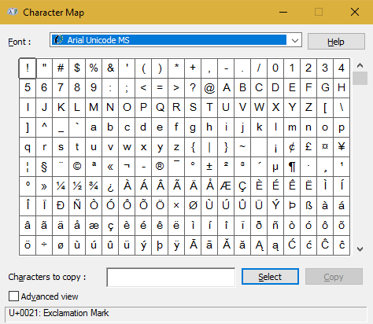

In the name of Allah, the Entirely Merciful, the Especially Merciful.
This article will help introduce you to the different methods of sending salutations upon the greatest man to have ever lived, Prophet Muḥammad (Peace be upon him), along with some of the complications that occur due to intricacies of computers. The article will not discuss the issue from a fiqh perspective as there are already many good articles regarding it, for example, The obligation of invoking peace and blessings on the Prophet in a complete form and avoid using abbreviations like (PBUH), (SAW) etc.
Introduction
Sending salutations upon the Prophet (Peace be upon him) is an important act of worship which is, unfortunately, done half-heartedly when it comes to writing in this age. The article takes the following into consideration,
Salutations upon the Prophet (Peace be upon him) must be done in full at all times, whether in Arabic or English. ‘(Pbuh)’, ‘(ṣ)” or ‘(saw)” and all its variants are unacceptable.
Convenience. Salutations upon the Prophet should be made convenient for the user. Despite the advent of computers and word processors, you will still find people who find it difficult to send salutions upon the Prophet (Peace be upon him) in full.
Consistency. Methods introduced for sending salutations should help avoid typos and enable its semantics to be dealth with separately (you’ll understand this better in one of the following sections).
English or Arabic?
For those who have only ever used word processor software to put thoughts to paper/file/screen will think that this is probably a personal preference. Others, however, are aware of the limitations of certain files/methods and may be at times forced to type in English (or any other Latin based character set) even if their preference is Arabic. This and related issues will be discussed in this section.
Fonts consists of many characters from different alphabets of different languages. To get an idea of what this means, if on a Windows machine, open the application called ‘Character Map’. Browse through some of the common fonts and you’ll realize the amount of effort required to create a single font.

Character Map
Fonts consist of letters, special characters, joined characters, space, ligatures, and even fleurons at times. Each character in a font is represented by an address with which programs can realize the difference between say, Greek v and the English v. Fonts which include support for different languages are usually represented using the UTF-8 system, a sort of subset of Unicode. Addresses in this system are represented as U+XXXX where XXXX is a set of hexadecimal digits.
The Arabic language has always been attached to Islam and many conventions have now become a trademark of the language which even disbelievers learn, such as the Salam (greeting). You will be pleased to know that some have even moved into fonts as individual characters. Some of these are presented as follows, courtesy of Wikipedia.
Some Arabic symbols and their Unicode addresses
The character of concern here is the “Peace be upon him” symbol that occurs at the address U+FDFA. To see this in action, if on a Windows machine with at least Microsoft Office 2013, open a new blank document. Then type in the address of the required symbol, U+FDFA in this case. When you’re done, before you move the cursor anywhere else or type space, press ALT + X and your code should automatically switch to the respective symbol. This is demonstrated as follows,
Typing Salawāt symbol in Microsoft Word 2013
Please note that all fonts do not have support for this symbol. However, most of the popular fonts do, so it should not pose a problem.
Automation
Now that we know how to enter the salutations symbol in at least Microsoft Word 2013, let’s see how we can automate the process since the procedure is cumbersome if you have many instances to type.